フェの祭り
ロイヤルミュージック
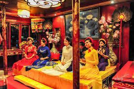
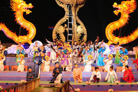 |
フェにはロイヤルミュージックがあります.それはユネスコに世界無形遺産をされました.チャンスがあれば必ず一回聞いてください
Festival
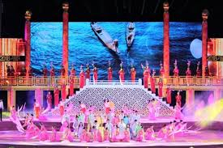
|
2年ごとに開催されるフエフェスティバルは、古代の首都フエの伝統的な価値観を思い出すことを目的として、偶数年にフエで開催される主要な文化イベントです。 このフェスティバルに参加すると、訪問者はストリートアートのパフォーマンス、詩の朗読、カラフルな展示会、コンサート、ドラミング、歴史映画を楽しむことができます。
フェの文化
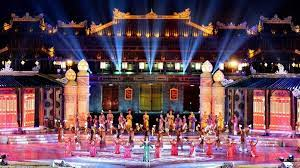
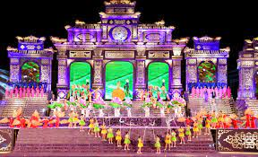
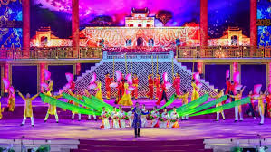
|
主要な祭りのひとつであるフエまつりは、街の内外を問わず広い空間で再現され、フエの文化的価値観の復活に貢献しています.
ロイヤルナイト、ナムジャオの犠牲式、トゥルーエンローとヴィンクイバイトーフェスティバル、アオダイフェスティバル、シーフェスティバル、カイトフライング、詩のリリース、詩のパフォーマンス、フェスティバルカントリーマーケット、人間の旗、レース体験などの多くのプログラム...
船の王様
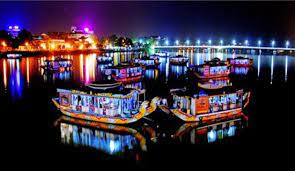
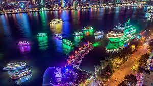
|
豪華なディナークルーズでベトナムの有名な川、香水川を間近でご覧ください,騒音と群衆を置き去りにして、伝統的なドラゴンボートからの美しい景色をお楽しみください,山、寺院、神社の素晴らしい景色を眺めながら、船上で美味しいディナーをお楽しみください,伝統的な提灯を照らし、夜空に滑り込むのを見てください
仏教の文化
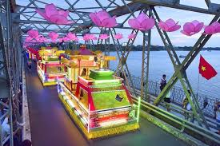
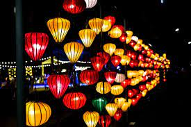
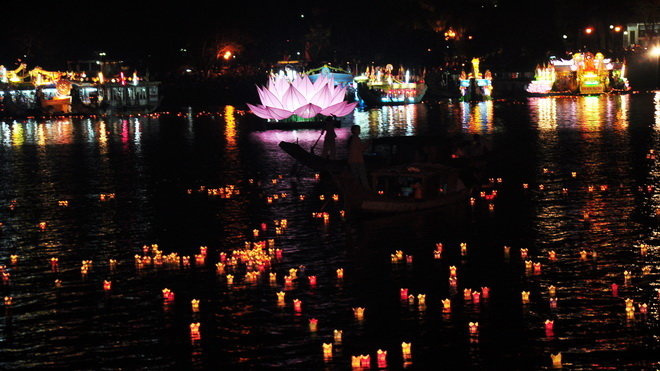
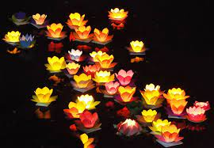
|
ヴランはフエの私的な休日ではありませんが、ヴランは紛れもない特徴であり、フエの個性と魂が最もはっきりと明らかになる機会です。フエでは、ヴランは仏陀の誕生日に次ぐ2番目に大きなお祭りです。仏陀の誕生日は、伝統的な新年ほど混雑していませんが、非常に厳粛で敬意を表して、多くのフエの人々が墓を訪れ、故人のために線香を焚く日です。 ヴランは仏教の祭りですが、仏教徒であろうとなかろうと、古代の首都の大多数の人々にとって、太陰暦の毎年7月15日はこの特別な日を楽しみにしています。